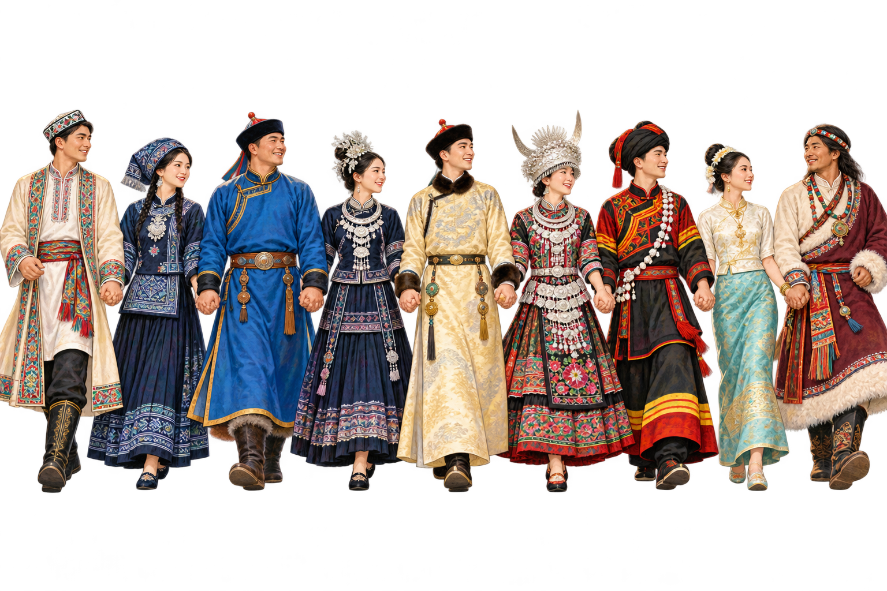

从听见，到了解。
一把琴，一首歌，一段世代相传的故事。
走近中国民族音乐，也走近孕育它的生活与文化。
八音
十二木卡姆不是孤例。壮族、蒙古族、侗族、满族、苗族、彝族、傣族、藏族，
各自在自己的生活区域里养出了完全不同的音乐形态 ——
有的一口气唱几个钟头，有的无指挥无伴奏地合唱，有的靠一件两弦乐器撑起整场。
向下滑，走进八音长卷；也可以直接选择下方的民族档案。
每张卡上的颜色，和那一族档案页用的是同一个 —— 也从附录「一条旋律，八个音」里那个音符接过来。
八页没有先后，按旋律图上的音高排。想按民族找，看卡片上的族名。
每页都标了来源。带 ↗ 的是可点的官方链接，点开在新标签打开。
有的条目带「读之前先知道」。那是资料里明确指出的说法边界 —— 读者按错的口径去理解，比读到空字段更糟。
弦脉 · 让声音相连
一把琴，一首歌，一段世代相传的故事。
走近中国民族音乐，也走近孕育它的生活与文化。
让山间、草原与村寨里的旋律，被更多人听见。
每一次认真倾听与分享，都能让文化多一位同行者。
向传承人学习，让年轻人参与。
让传统音乐走进今天的生活，让古老旋律拥有新的回响。
尊重每一种传统，珍惜每一位传承者。
让不同的声音相伴，让共同的文化记忆长久流传。

继续向下，让声音相连
带着新的发现，再听一次 ↗ 人物与场景为 AI 绘制的文化主题插画